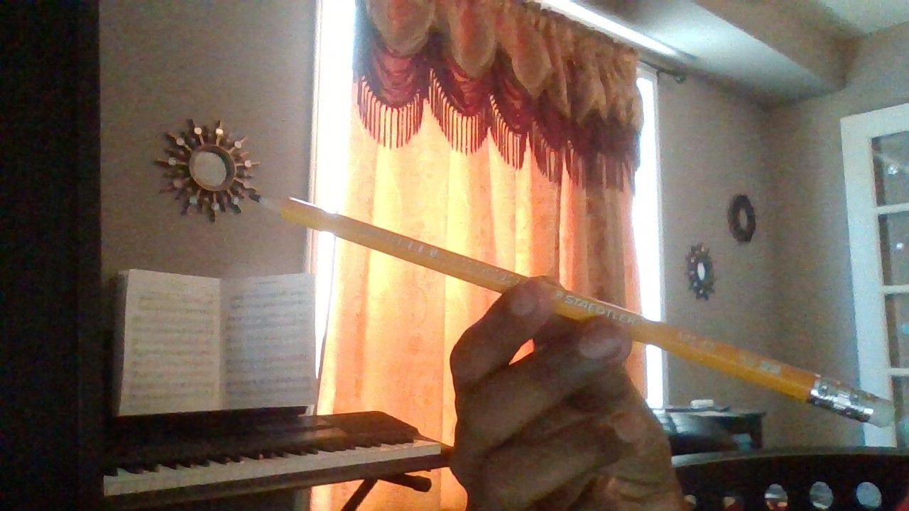
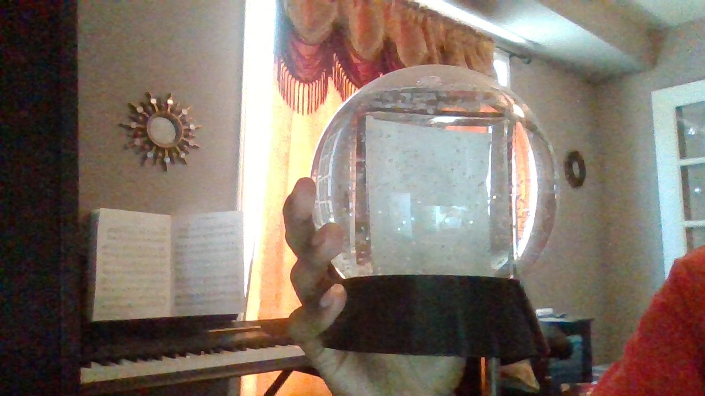

Mobile Net vs Google Lens
Which is better?
- Ball
GOOGLE LENS: 👎
Google Lens saw a balloon instead.MOBILE NET: 👎
MobileNet saw a punching bag.GOOGLE LENS IS MORE ACCURATE
- Book

GOOGLE LENS: 👍
Google Lens saw the exact book it was and knew the author as well.MOBILE NET: 👍
MobileNet saw that it was a comic book.GOOGLE LENS IS MORE ACCURATE
- Block

GOOGLE LENS: 🤷
Google Lens thought it was a piece of wood (like, something used in woodworking, not a Jenga block). They're pretty similar though.MOBILE NET: 👎
MobileNet found an blow dryer.GOOGLE LENS IS MORE ACCURATE
- Card

GOOGLE LENS: 👍
Google Lens recognized the image as a card.MOBILE NET: 👎
MobileNet saw an electrical switch.GOOGLE LENS IS MORE ACCURATE
- Box
GOOGLE LENS: 👍
Google Lens found the exact box and showed me prices.MOBILE NET: 👎
MobileNet found a lighter.GOOGLE LENS IS MORE ACCURATE
- Controller

GOOGLE LENS: 👍
Google Lens found the controller and knew that it was from an Xbox One S, pretty cool.MOBILE NET: 👍
MobileNet saw that it was a joystick/controller.GOOGLE LENS IS MORE ACCURATE
- Nerf
GOOGLE LENS: 👍
Google Lens found the exact Nerf Gun this was and knew its name.MOBILE NET: 👎
MobileNet found a drill.GOOGLE LENS IS MORE ACCURATE
- Pencil
GOOGLE LENS: 👎
Google Lens didn't focus on the Pencil and instead looked at the curtains. When changed to look only at the pencil it worked.MOBILE NET: 👎
MobileNet found a mop.GOOGLE LENS IS MORE ACCURATE
- Snowglobe
GOOGLE LENS: 👎
Google Lens did not recognize this image. It saw some things that looked similar?MOBILE NET: 👎
MobileNet found a television or a breastplate.GOOGLE LENS IS MORE ACCURATE
- Phone
GOOGLE LENS: 🤷
Google Lens recognized it was an Iphone, but thought it was an Iphone X instead of an Iphone 12.MOBILE NET: 🤷
MobileNet usually found an hourglass. It did see a phone rarely.GOOGLE LENS IS MORE ACCURATE
TEST IMAGES
10 testing images were used:
Thumbs up = 1 right Thumbs down = 0 right Shrug = 0.5 right
GOOGLE LENS WAS RIGHT FOR 6
MOBILE NET WAS RIGHT FOR 2.5
In conclusion, I find Google Lens to be more accurate. Google Lens might have won because it has access the wealth of information of Google, which helps it be more accurate.
...